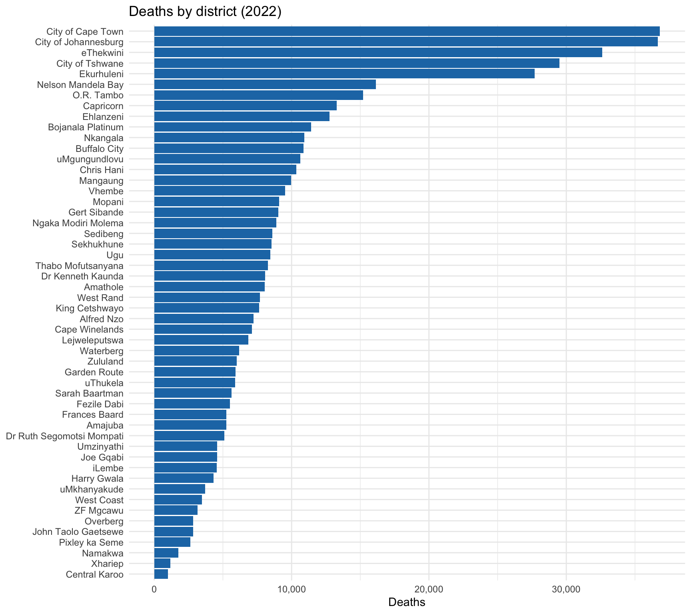
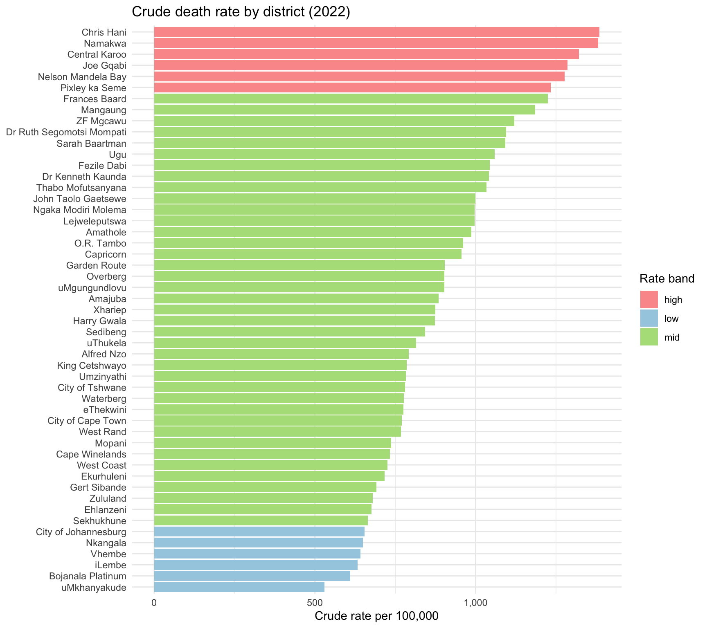
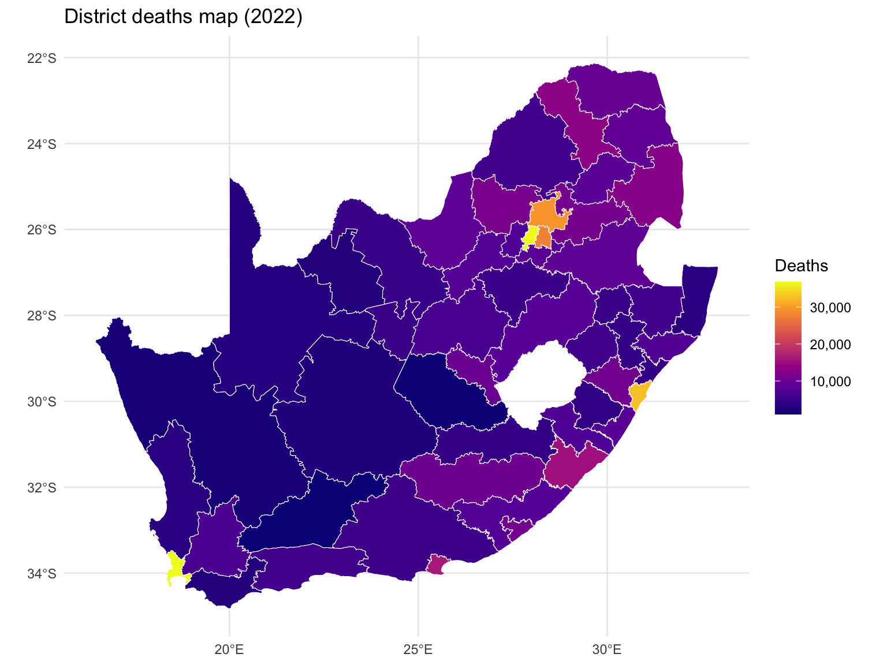
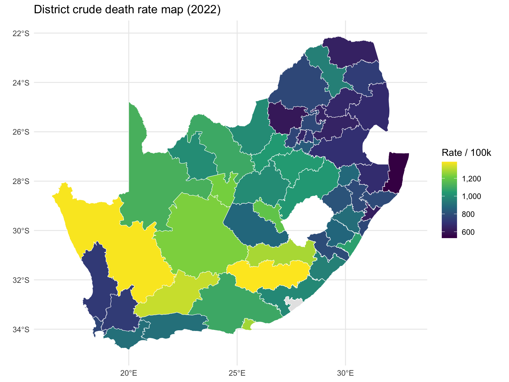

Analysis year: 2022 Districts in map layer: 52 Districts with recorded deaths: 52 Districts with zero recorded deaths: 0 Unmatched death-district names (not in map): 0 June 17, 2026
This page keeps the checks deliberately simple:
No modelling or causal claims are made.
Analysis year: 2022 Districts in map layer: 52 Districts with recorded deaths: 52 Districts with zero recorded deaths: 0 Unmatched death-district names (not in map): 0 province | district_name | deaths |
|---|




group | province | district_name | deaths | population | crude_rate_per_100k |
|---|---|---|---|---|---|
Highest | Eastern Cape | Chris Hani | 10,341 | 746,537 | 1,385.2 |
Highest | Nothern Cape | Namakwa | 1,758 | 127,281 | 1,381.2 |
Highest | Western Cape | Central Karoo | 1,005 | 76,069 | 1,321.2 |
Highest | Eastern Cape | Joe Gqabi | 4,580 | 356,385 | 1,285.1 |
Highest | Eastern Cape | Nelson Mandela Bay | 16,141 | 1,263,933 | 1,277.0 |
Highest | Nothern Cape | Pixley ka Seme | 2,630 | 213,116 | 1,234.1 |
Highest | Nothern Cape | Frances Baard | 5,256 | 429,183 | 1,224.7 |
Highest | Free State | Mangaung | 9,960 | 840,073 | 1,185.6 |
Highest | Nothern Cape | ZF Mgcawu | 3,155 | 281,520 | 1,120.7 |
Highest | North West | Dr Ruth Segomotsi Mompati | 5,113 | 467,107 | 1,094.6 |
Lowest | Eastern Cape | Chris Hani | 10,341 | 746,537 | 1,385.2 |
Lowest | Nothern Cape | Namakwa | 1,758 | 127,281 | 1,381.2 |
Lowest | Western Cape | Central Karoo | 1,005 | 76,069 | 1,321.2 |
Lowest | Eastern Cape | Joe Gqabi | 4,580 | 356,385 | 1,285.1 |
Lowest | Eastern Cape | Nelson Mandela Bay | 16,141 | 1,263,933 | 1,277.0 |
Lowest | Nothern Cape | Pixley ka Seme | 2,630 | 213,116 | 1,234.1 |
Lowest | Nothern Cape | Frances Baard | 5,256 | 429,183 | 1,224.7 |
Lowest | Free State | Mangaung | 9,960 | 840,073 | 1,185.6 |
Lowest | Nothern Cape | ZF Mgcawu | 3,155 | 281,520 | 1,120.7 |
Lowest | North West | Dr Ruth Segomotsi Mompati | 5,113 | 467,107 | 1,094.6 |
Lowest | Eastern Cape | Sarah Baartman | 5,631 | 515,636 | 1,092.0 |
Lowest | KwaZulu-Natal | Ugu | 8,440 | 797,233 | 1,058.7 |
Lowest | Free State | Fezile Dabi | 5,520 | 528,627 | 1,044.2 |
Lowest | North West | Dr Kenneth Kaunda | 8,085 | 776,872 | 1,040.7 |
Lowest | Free State | Thabo Mofutsanyana | 8,278 | 800,438 | 1,034.2 |
Lowest | Nothern Cape | John Taolo Gaetsewe | 2,844 | 284,555 | 999.5 |
Lowest | North West | Ngaka Modiri Molema | 8,900 | 892,982 | 996.7 |
Lowest | Free State | Lejweleputswa | 6,847 | 687,004 | 996.6 |
Lowest | Eastern Cape | Amathole | 8,043 | 815,280 | 986.5 |
Lowest | Eastern Cape | O.R. Tambo | 15,207 | 1,583,055 | 960.6 |
Lowest | Limpopo | Capricorn | 13,292 | 1,389,498 | 956.6 |
Lowest | Western Cape | Garden Route | 5,916 | 654,598 | 903.8 |
Lowest | Western Cape | Overberg | 2,844 | 314,985 | 902.9 |
Lowest | KwaZulu-Natal | uMgungundlovu | 10,649 | 1,180,005 | 902.5 |
Lowest | KwaZulu-Natal | Amajuba | 5,242 | 592,773 | 884.3 |
Lowest | Free State | Xhariep | 1,168 | 133,595 | 874.3 |
Lowest | KwaZulu-Natal | Harry Gwala | 4,329 | 495,595 | 873.5 |
Lowest | Gauteng | Sedibeng | 8,607 | 1,021,474 | 842.6 |
Lowest | KwaZulu-Natal | uThukela | 5,885 | 722,151 | 814.9 |
Lowest | Eastern Cape | Alfred Nzo | 7,235 | 913,804 | 791.7 |
Lowest | KwaZulu-Natal | King Cetshwayo | 7,632 | 971,899 | 785.3 |
Lowest | KwaZulu-Natal | Umzinyathi | 4,591 | 586,298 | 783.0 |
Lowest | Gauteng | City of Tshwane | 29,501 | 3,782,799 | 779.9 |
Lowest | Limpopo | Waterberg | 6,170 | 794,378 | 776.7 |
Lowest | KwaZulu-Natal | eThekwini | 32,609 | 4,203,764 | 775.7 |
Lowest | Western Cape | City of Cape Town | 36,813 | 4,782,856 | 769.7 |
Lowest | Gauteng | West Rand | 7,701 | 1,002,630 | 768.1 |
Lowest | Limpopo | Mopani | 9,094 | 1,233,502 | 737.3 |
Lowest | Western Cape | Cape Winelands | 7,111 | 970,303 | 732.9 |
Lowest | Western Cape | West Coast | 3,477 | 479,421 | 725.2 |
Lowest | Gauteng | Ekurhuleni | 27,692 | 3,864,073 | 716.7 |
Lowest | Mpumalanga | Gert Sibande | 9,024 | 1,305,792 | 691.1 |
note |
|---|
No unmatched district names |